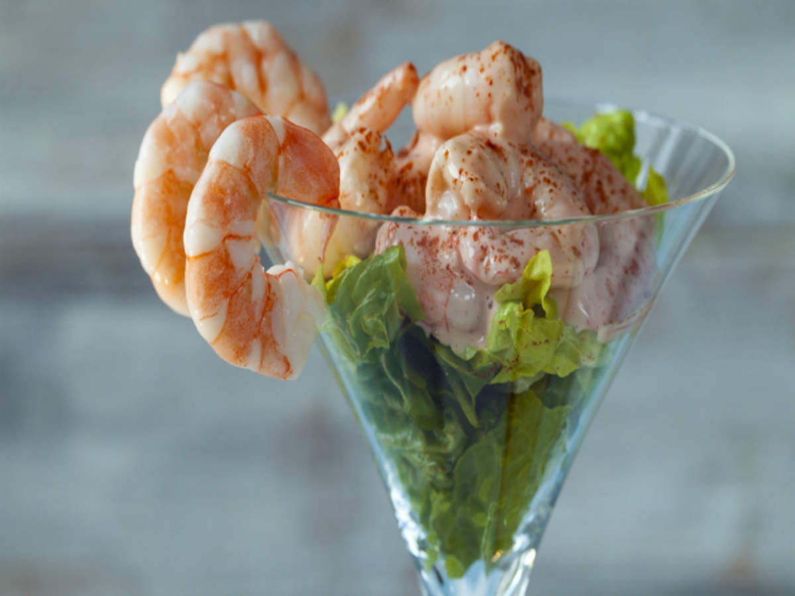

<!DOCTYPE html>
<html lang="en"></html>
<head>
    <meta charset="UTF-8">
    <title>Prawn Cocktail</title>
</head>
<body>
    <h1>Prawn Cocktail</h1>
    
    <p><h3><strong><em> Prawn Cocktail Starter</em></strong></h3></p>
    <p> Fresh prawns served in a delicious sauce</p>
    <p>Preperation time: 10 mins</p>
    <p>Cooking time: 0 mins</p>
    <p><h3><strong>Ingredients</strong></h3></p>
    <p><ul>
        <li>75g light mayonaise</li>
        <li>20g ketchup</li>
        <li>Dash Worcestershire sauce</li>
        <li>200g cooked prawns</li>
        <li>Sprinkle paprika</li>
        <li>Lemon slices</li>
    </ul></p>
    <p><h3><strong>Steps</strong></h3></p>
    <p><ol>
        <li>Measure out the mayonnaise, ketchup and Worcestershire sauce and mix them together in a bowl.</li>
        <li>Add the prawns and mix with the sauce until completely coated.</li>
        <li>To serve, place spoonfuls of the prawn cocktail mixture onto small lettuce leaves or use as a healthy baked potato topping.</li>
        <li>Sprinkle over a little paprika and serve with fresh lemon slices on the side.</li>
    </ol></p>
</body>